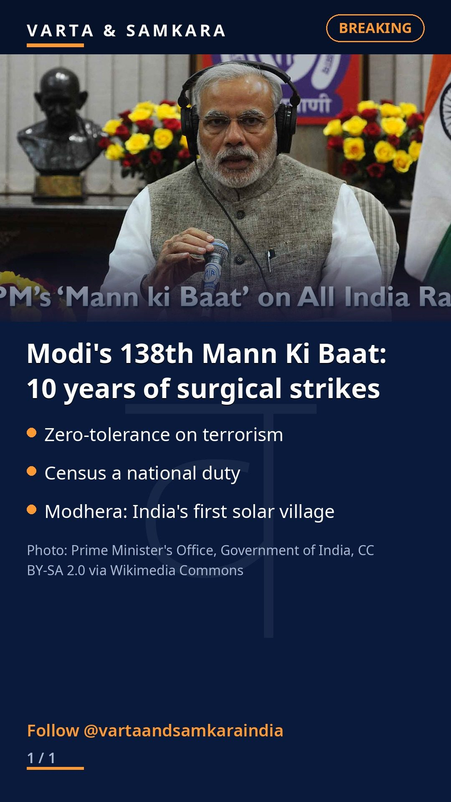

Modi's Mann Ki Baat: 10 years of surgical strikes, census duty, and a solar village

Prime Minister Narendra Modi aired the 138th episode of his monthly radio address Mann Ki Baat on Sunday, marking ten years since the 2016 surgical strikes across the Line of Control.
The Prime Minister reiterated India's zero-tolerance policy on terrorism, citing the Balakot air strikes and Operation Sindoor. "If terrorists dare to cast an evil eye on India, they will be met with a befitting response," he said.
Census, cleanliness and a solar village
Modi called the ongoing Census a national responsibility, noting that more than 32 crore families have been recorded in the first phase. He added that over 2.6 crore people have self-enumerated online in 16 languages, a process he said takes 15 to 20 minutes with no document upload required.
Ahead of Gandhi Jayanti, he urged a renewed Swachh Bharat push, calling cleanliness "the most beautiful tribute we can pay to Bapu."
He also hailed the transformation of Modhera, Gujarat, from a historic Sun Temple town into India's first solar village, presenting it as a model of how heritage and modern clean energy can go together.
The episode blended national security themes with civic participation, a pattern that has defined the programme through its decade-long run.
Source: UNI India, The Economic Times
Visuals: Prime Minister's Office, Government of India, CC BY-SA 2.0 via Wikimedia Commons
PoliticsIndia#India#News#CurrentAffairs#BreakingNews#MannKiBaat#NarendraModi#SurgicalStrikes#Terrorism#ZeroTolerance#Census2026#SwachhBharat#Modhera
See the original reel / carousel with motion graphics on Instagram.
View on Instagram